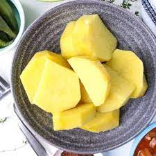

BOILED YAM

How To!
INGREDIENTS
STEPS
First off you shouldn't even be here looking up how to make boiled yam. Come on!
- Peel off the yam nicely with your knife and cut into sizable pieces. Put these pieces into water and add a little salt.
We're almost Finished...
- Now put it on fire and wait for about 25-30 minutes and it's cooked and ready to eat!